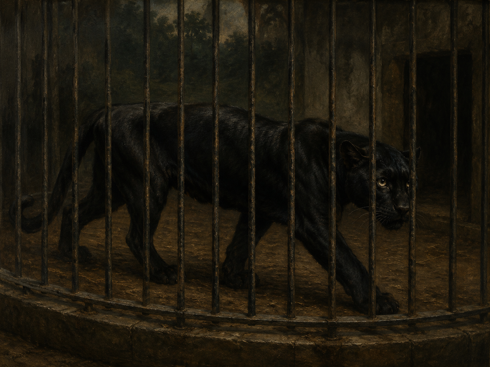

Sein Blick ist vom Vorübergehn der Stäbe
Vorübergehn 是名词化的不定式（das Vorübergehen 的省音形式），意为“掠过、经过”这一动作本身；von + 第三格 der Stäbe 表原因（“被栏杆的不断掠过……”）。
豹
Neue Gedichte（新诗集，1907）· 副标题 „Im Jardin des Plantes, Paris“
象征主义 / 事物诗（Dinggedicht）
1902–1903年间作于巴黎，1903年9月首次发表

图片由 AI 生成
Sein Blick ist vom Vorübergehn der Stäbe
Vorübergehn 是名词化的不定式（das Vorübergehen 的省音形式），意为“掠过、经过”这一动作本身；von + 第三格 der Stäbe 表原因（“被栏杆的不断掠过……”）。
so müd geworden, daß er nichts mehr hält.
so … daß …（如此……以至于……）是德语中经典的结果状语从句结构；hält 在此并非“握住”，而是“留存、抓住（视线的焦点）”之意，形容目光已无法聚焦于任何具体事物。
Ihm ist, als ob es tausend Stäbe gäbe
"Ihm ist, als ob …" 句型与《你像一朵花》中的 "Mir ist, als ob …" 相同，表主观感受的比拟，从句用虚拟式二式（gäbe，geben 的虚拟式二式）。
der sich im allerkleinsten Kreise dreht,
allerkleinst 是形容词最高级 kleinst（最小的）再加前缀 aller-（强调级，“所有之中最……”）构成的“最高级的最高级”，德语中常见的加强修辞手法。
in der betäubt ein großer Wille steht.
betäubt（麻痹的、被麻醉的，动词 betäuben 的过去分词作状语）修饰 steht 的方式：“意志”被麻痹地伫立在圆圈的中心，暗示豹强大的生命意志因囚禁而陷入停滞、无法施展。
Nur manchmal schiebt der Vorhang der Pupille
der Vorhang der Pupille（瞳孔的帘幕）是全诗最著名的隐喻，将瞳孔的张合比作舞台幕布的拉开，暗示豹与外部世界之间如同隔着一层“表演/观看”的屏障。
und hört im Herzen auf zu sein.
aufhören + zu + Infinitiv（停止做……）："hört … auf zu sein" 意为“不再存在”；全诗以这一近乎虚无主义的短句收尾——外界影像进入豹的身体后，最终在“心”中归于虚无，无法真正抵达或留存。
| Infinitiv | Präsens 3. Sg. |
Präteritum | Perfekt | Partizip II | Konjunktiv II | Hilfsverb |
|---|---|---|---|---|---|---|
| halten | hält | hielt | hat gehalten | gehalten | hielte | haben |
| ↳ 诗中用现在式 "hält"，意为“留存、抓住（焦点）”。 | ||||||
| geben（es gibt 句型） | gibt | gab | hat gegeben | gegeben | gäbe | haben |
| ↳ 诗中用虚拟式二式 "es … gäbe"（als ob 从句）。 | ||||||
| sich drehen | dreht sich | drehte sich | hat sich gedreht | gedreht | drehte sich | haben |
| ↳ 诗中用现在式 "sich … dreht"（反身动词，反身代词 sich 位于从句内部）。 | ||||||
| schieben | schiebt | schob | hat geschoben | geschoben | schöbe | haben |
| ↳ 诗中用现在式 "schiebt … sich … auf"（可分动词 aufschieben 在此为反身及物：“（帘幕）自行拉开”）。 | ||||||
| aufhören | hört auf | hörte auf | hat aufgehört | aufgehört | hörte auf | haben |
| ↳ 诗中用现在式 "hört … auf zu sein"，可分动词，前缀置于句末。 | ||||||
Ihm ist, als ob es tausend Stäbe gäbe / und hinter tausend Stäben keine Welt.
so müd geworden, daß er nichts mehr hält. … in der betäubt ein großer Wille steht.
Nur manchmal schiebt der Vorhang der Pupille / sich lautlos auf –.
und hört im Herzen auf zu sein.
《豹》副标题“巴黎植物园”（Im Jardin des Plantes, Paris）明确指出诗歌观察对象来自巴黎植物园附设的动物园——该园当时展出包括一只被囚于笼中的黑豹，很可能正是诗中反复兜圈踱步（一种圈养动物常见的“刻板行为” stereotypisches Verhalten）行为的直接观察来源。里尔克在1902年写给妻子克拉拉·韦斯特霍夫的信中也提到雕塑家罗丹（Auguste Rodin）工作室里一件豹的石膏模型对他的启发。
这首诗被公认为里尔克“事物诗”（Dinggedicht）风格的开山之作与最著名代表：诗人尝试像罗丹雕塑一件“物”那样，用语言精确“雕刻”出一只动物的外在形态（目光、步态、瞳孔）及其被囚禁后逐渐丧失与外部世界联系的内在状态，而非直接抒发诗人自己的情感。全诗1903年9月首次发表于布拉格的月刊《Deutsche Arbeit》，后作为里尔克最早期的作品收入1907年出版的重要诗集《新诗集》（Neue Gedichte）。
此诗在流行文化中也屡被引用，例如电影《无语问苍天》（Awakenings，改编自神经学家奥利弗·萨克斯的同名著作）中，一位患者用这首诗描述自己被禁锢的生命状态；伍迪·艾伦电影《另一个女人》（1988）中也曾引用此诗作为主角内心世界的隐喻。
中文译文为本站学习译文（AI 辅助），采用直译，力求保留原诗三节从“目光的疲惫”到“步态的循环”再到“瞳孔骤开、影像消逝于心”的递进结构，以及诗中几处关键隐喻（栏杆、帘幕、力之舞）的意象完整性。里尔克作品德文原文已于1996年进入公有领域，可放心使用；但目前存在的中文译本（如冯至、绿原、黄灿然等译者的版本）均由现代译者完成，版权仍在保护期内，本站不转载具体译本全文。
德文正文通过两个独立来源（deutschelyrik.de 与 German Wikipedia）逐字核对，三节十二行内容（含标点、破折号位置）完全一致，未发现任何异文，可信度很高。Wikipedia 词条并提供了详实的创作背景与出版史，与 deutschelyrik.de 标注的"1903"年份及副标题吻合。里尔克1926年逝世，德文原文已于1996年进入公有领域，版权状态明确。